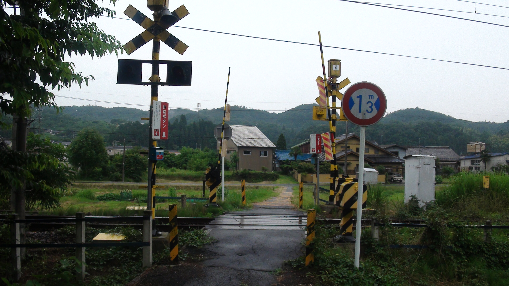

ようこそ！
ここでは、カメラ・旅行記録・その他諸々について書き残していく個人サイトです。参考になれば幸いです。

更新履歴
2026/09/09 サイト開設。
2026/09/22 自己紹介記事完成
2026/09/12 大規模改修開始
コンテンツ
その他サイト
編集ソフトダウンロードしたので、いつかアップするのでリンクを貼っておきます
YouTube和楽カメラ
お問い合わせはこちらからカメラと旅行記などについての個人サイト
ここでは、カメラ・旅行記録・その他諸々について書き残していく個人サイトです。参考になれば幸いです。

2026/09/09 サイト開設。
2026/09/22 自己紹介記事完成
2026/09/12 大規模改修開始
編集ソフトダウンロードしたので、いつかアップするのでリンクを貼っておきます
YouTube和楽カメラ
お問い合わせはこちらから